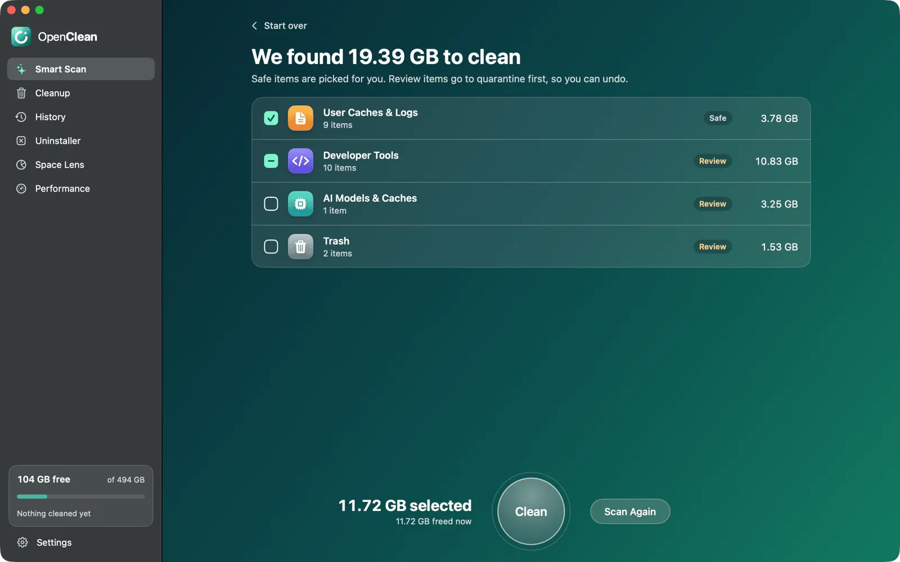
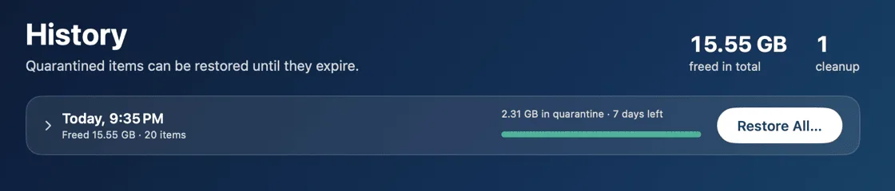

OpenClean
A free, open-source Mac cleaner you can read and undo.
An open alternative to CleanMyMac for macOS.

What it does
Six tools in one app, with no account, trial or purchase.
-
Clean up junk
Smart Scan finds caches, logs, Trash and other leftovers, and tells you why each one is safe to remove.
-
Uninstall apps completely
Remove an app together with the files it leaves behind.
-
See what fills your disk
Space Lens maps your storage and finds large, old and duplicate files.
-
Clean up developer tools
Xcode, npm, Cargo, Docker, AI model downloads and old project folders.
-
Watch your Mac
CPU, memory, disk and network in the menu bar.
-
Private
No account, no tracking. It only checks GitHub for updates, and you can turn that off.
Safe and undoable
Nothing is removed until you review it, and most of it can come back.

-
Your personal files stay putOpenClean never touches your documents, photos, mail or system files.
-
Quarantine first, then goneAnything that is not trivially rebuilt goes to a quarantine first. Restore it from History for up to 90 days (7 by default).
-
Rules you can readEvery cleaning rule is a plain, readable file, and the app explains each one before you clean.
-
Labelled in wordsEach item is tagged Safe or Review. Safe items are picked for you; Review items wait for you to choose.
Want the details? Read how it works.
Questions
Short answers. The how it works page has the long ones.
Is it really free?
Yes. Free and open source under GPL-3.0, with no account, trial or purchase.
Can I get my files back?
Yes. Anything that is not trivially rebuilt is moved to quarantine, and History restores it until it expires.
Does it need special permissions?
Full Disk Access, once, so it can see the Trash, old iOS backups and other protected folders. It asks for your administrator password only to clean system caches.
Does it send my data anywhere?
No. The only network request is a daily check for a new release, which you can switch off in Settings.
Which languages does it speak?
English, German, Spanish, French, Japanese and Simplified Chinese. It follows your macOS language.
Is there a command line version?
Yes. brew install leoanimesh/openclean/openclean installs the openclean command. See the command line guide.
Get OpenClean
Drag it onto Applications and run your first Smart Scan.